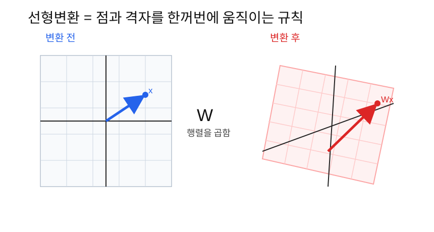
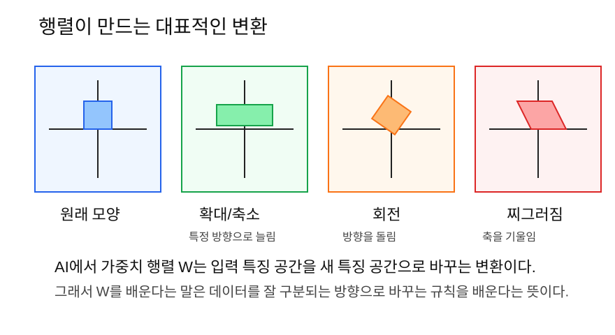

선형변환은 벡터나 특징 공간을 행렬로 움직이고, 늘리고, 줄이고, 회전시키는 규칙이다.
3단계에서 신경망 한 층을 이렇게 썼다.
Y = XW + b여기서 XW는 단순한 숫자 계산이 아니다. 입력 데이터의
특징을 새 특징으로 바꾸는 변환이다.
기존 특징 -> W를 곱함 -> 새 특징AI가 학습한다는 것은 결국 좋은 W를 찾는 일이다. 좋은
W는 데이터를 더 잘 구분되게 바꿔준다.
벡터 하나를 점이나 화살표로 생각해 보자. 행렬을 곱하면 그 점과 화살표가 다른 위치로 이동한다.

중요한 감각은 이것이다.
행렬 W는 벡터 x를 새로운 벡터 Wx로 바꾼다.공식으로는 다음처럼 쓴다.
y = Wx또는 데이터가 여러 개 있으면 다음처럼 쓴다.
Y = XW벡터 하나만 움직이는 것이 아니다. 같은 행렬 W를 모든
벡터에 곱하면 전체 좌표 공간이 함께 바뀐다.
예를 들어 종이에 격자를 그려 놓고 잡아당긴다고 생각해 보자.
이런 일을 숫자로 하는 것이 행렬이다.

벡터가 하나 있다.
x = [3, 2]이 벡터는 “오른쪽으로 3, 위로 2”라는 뜻이다.
x축 방향만 2배 늘리고 싶다면 다음 행렬을 쓴다.
W = [
[2, 0],
[0, 1]
]계산하면 다음과 같다.
xW = [3, 2] x [
[2, 0],
[0, 1]
]첫 번째 새 특징:
3*2 + 2*0 = 6두 번째 새 특징:
3*0 + 2*1 = 2결과는 다음과 같다.
xW = [6, 2]즉 [3, 2]가 [6, 2]로 바뀌었다. 오른쪽
방향만 2배 늘어난 것이다.
이번에는 영화 취향 예제를 다시 보자.
x = [5, 1]뜻은 다음과 같다.
액션 선호도 = 5
로맨스 선호도 = 1가중치 행렬이 다음과 같다고 하자.
W = [
[2, 0],
[1, 3]
]이 행렬은 기존 특징을 새 특징으로 바꾼다.
새 특징 1 = 액션 블록버스터 점수
새 특징 2 = 로맨스 영화 점수계산하면:
xW = [5*2 + 1*1, 5*0 + 1*3]
= [11, 3]즉 기존 특징 [액션 선호도, 로맨스 선호도]가 새 특징
[액션 블록버스터 점수, 로맨스 영화 점수]로 바뀌었다.
이것이 AI에서 선형변환을 이해하는 핵심이다.
선형변환을 볼 때는 항상 이렇게 말하면 된다.
무엇에서 무엇으로 바뀌었는가?예를 들어:
| 변환 전 특징 | 변환 후 특징 |
|---|---|
| 액션 선호도, 로맨스 선호도 | 액션 추천점수, 로맨스 추천점수 |
| 픽셀 밝기들 | 선, 모서리, 질감 특징 |
| 단어 ID | 단어 임베딩 벡터 |
| 문장 벡터 | 다음 토큰 예측에 유리한 특징 |
딥러닝은 이런 변환을 여러 층 반복한다.
원본 데이터 -> 1층 변환 -> 2층 변환 -> 3층 변환 -> 예측선형변환은 두 가지 성질을 만족한다.
첫째, 더한 뒤 변환한 것과 각각 변환한 뒤 더한 것이 같다.
W(a + b) = Wa + Wb둘째, 숫자를 곱한 뒤 변환한 것과 변환한 뒤 숫자를 곱한 것이 같다.
W(ca) = cWa처음에는 이 공식을 외우기보다 이렇게 이해하면 된다.
선형변환은 전체 공간을 규칙적으로 바꾸는 변환이다.그래서 격자의 직선은 변환 후에도 직선으로 남는다. 다만 방향과 간격이 바뀔 수 있다.
신경망은 보통 이렇게 계산한다.
Y = XW + bXW는 선형변환이다.
+ b는 전체를 밀어주는 이동이다.
예를 들어:
xW = [11, 3]
b = [1, -1]그러면:
xW + b = [12, 2]즉 먼저 특징을 새 방향으로 바꾼 뒤, 마지막에 위치를 조금 조정한다.
선형변환: 모양과 방향을 바꿈
bias: 위치를 이동시킴이미지 분류를 생각해 보자.
처음 픽셀 데이터는 사람이 보기에는 이미지지만, AI에게는 숫자 묶음이다.
신경망의 앞쪽 층은 픽셀을 이런 특징으로 바꿀 수 있다.
픽셀 -> 선, 모서리, 색 변화중간 층은 더 큰 특징을 만들 수 있다.
선, 모서리 -> 눈, 코, 바퀴, 창문뒤쪽 층은 최종 판단에 가까운 특징을 만들 수 있다.
눈, 코, 털 -> 고양이일 가능성
바퀴, 창문 -> 자동차일 가능성각 층의 W는 이런 특징 변환을 담당한다.
다음 입력 벡터가 있다.
x = [2, 4]다음 행렬을 곱한다.
W = [
[1, 3],
[2, 1]
]계산:
xW = [2, 4] x [
[1, 3],
[2, 1]
]첫 번째 새 특징:
2*1 + 4*2 = 10두 번째 새 특징:
2*3 + 4*1 = 10결과:
xW = [10, 10]의미:
기존 특징 [2, 4]가 새 특징 [10, 10]으로 바뀌었다.import numpy as np
x = np.array([5, 1])
W = np.array([
[2, 0],
[1, 3],
])
y = x @ W
print(y)
# [11 3]여러 데이터를 한 번에 변환할 수도 있다.
import numpy as np
X = np.array([
[5, 1],
[1, 5],
])
W = np.array([
[2, 0],
[1, 3],
])
Y = X @ W
print(Y)
# [[11 3]
# [ 7 15]]| 헷갈리는 말 | 쉽게 풀어쓴 말 |
|---|---|
| 선형변환 | 벡터를 행렬로 바꾸는 규칙 |
| 행렬 W | 변환 규칙을 담은 숫자 표 |
| 특징 공간 | 데이터가 벡터로 놓여 있는 공간 |
| 새 특징 | 기존 특징을 섞어서 만든 새로운 표현 |
| bias | 변환 후 위치를 조금 이동시키는 값 |
xW에서 W는 어떤 역할을 하는가?[5, 1]이 [11, 3]으로
바뀐다는 말의 의미는 무엇인가?XW와 XW + b의 차이는 무엇인가?선형변환은 행렬을 이용해 벡터와 특징 공간을 바꾸는 규칙이다. AI에서
가중치 행렬 W는 입력 특징을 새 특징으로 바꾼다. 그래서
학습은 데이터를 더 잘 설명하고 더 잘 구분할 수 있는 변환 규칙
W를 찾는 과정이라고 볼 수 있다.
다음 노트: 05_미분과ChainRule